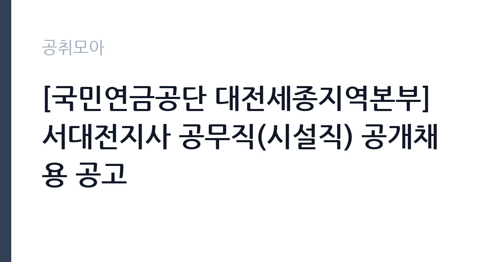

[공공기관] [국민연금공단 대전세종지역본부] 서대전지사 공무직(시설직) 공개채용 공고
국민연금공단 · 대전 · 마감 2026-11-04 (D-7) · 출처 잡알리오

한눈에 보는 모집 조건
| 기관 | 국민연금공단 |
|---|---|
| 공고명 | [국민연금공단 대전세종지역본부] 서대전지사 공무직(시설직) 공개채용 공고 |
| 고용형태 | 공무직 |
| 근무지 | 대전 |
| 게시일 | 2026-10-28 |
| 마감일 | 2026-11-04 (D-7) |
지원자격, 이렇게 읽으세요
- 임용(예정)일부터 근무가 가능한 사람
- 전기분야 경력이 1년 이상이고 전기기능사 이상 자격*을 소지한 사람
공무직 근로자는 공무원이 아니라 근로기준법이 적용되는 근로자이지만 기간의 정함이 없는 무기계약으로 채용되는 경우가 많아 정년까지 근무가 가능합니다. 채용은 공무원 시험과 달리 기관의 자체 전형으로 진행되고 인사 규정과 임금표를 적용받습니다. 이번 공고는 국민연금공단에서 직접 진행하는 자체 전형으로, 응시자격과 제출서류는 공고문에 항목별로 제시됩니다. 시설 관리 직무는 관련 자격이나 경력을 우대하는 경우가 많습니다. 전기기능사나 설비보수, 소방설비 관련 자격이 있으면 유리하고 일부 공고는 자격을 필수로 요구합니다. 운전면허와 교대 근무 가능 여부도 자주 확인하는 항목입니다. 시설 규모가 큰 기관은 담당 구역이 나뉘어 있어 구체적인 업무 범위를 공고문에서 확인해야 합니다. 국가공무원법상 결격사유와 신체 조건 확인 절차가 있습니다. 서류는 접수 마감 이후 보완이 되지 않으므로 자격 요건과 증빙 서류를 마감 전에 모두 갖춰야 합니다. 공고문에 명시된 우대 사항은 해당 여부를 확인해 증빙을 첨부해야 가점이 반영됩니다. 자격증은 유효 기간과 등록 상태를 확인해야 합니다. 갱신이 필요한 자격이라면 갱신 여부를 먼저 점검하십시오. 이 공고 원문에 적힌 응시 조건 문구는 '연령·성별·학력 등 제한 없음(단, 임용일 기준 공단 정년(만60세) 이상자는 제외)' / '전기분야 경력이 1년 이상이고 전기기능사 이상 자격*을 소지한 사람'입니다. 문구를 그대로 읽고 본인 해당 여부를 하나씩 표시해 두면 서류 단계에서 탈락하는 일을 줄일 수 있습니다.
이 공고의 포인트
이 공고의 첫 번째 포인트는 고용 형태입니다. 무기계약으로 채용되면 정년까지 근무가 가능해 재계약 부담이 없습니다. 반대로 기간제로 채용되는 공고라면 계약 기간을 먼저 확인해야 합니다. 두 번째는 업무 범위가 명확하다는 점입니다. 시설 관리·경비 직무로 채용되므로 배치 이후 담당 업무가 크게 흔들리지 않습니다. 세 번째는 근무지입니다. 대전 지역 근무로 수도권 공고에 비해 지원자 분포가 넓지 않아 상대적으로 경쟁이 분산되는 경우가 있습니다. 처우와 근무 형태가 표로 정리되어 있어 비교해 보기에 편한 공고입니다. 같은 직무 공고 중에서는 접수 마감이 가장 빨라 일정을 앞당겨 잡아야 합니다. 선발 인원은 공고문에 명시되어 있으니 모집분야 항목을 함께 확인하십시오.
전형은 어떻게 진행되나
1차 서류, 2차 면접의 2단계로 진행되는 구성이 일반적입니다. 서류에서는 자격 요건과 경력 증빙을 확인하고, 면접에서는 실제 업무 수행 능력과 조직 적응을 봅니다. 직무에 따라 필기시험이나 실기, 컴퓨터 활용 시험이 추가되기도 하므로 공고문의 전형표를 먼저 확인하십시오. 단계별로 합격자만 다음 전형에 응시할 수 있고, 단계마다 응시 자격 확인 서류를 다시 제출해야 하는 경우가 있습니다. 최종합격자 발표 후에는 신원조회와 채용 신체검사가 남아 있습니다. 제출서류 원본은 최종 단계에서 다시 요구되는 경우가 있어 사본과 함께 보관하십시오.
원문에서 확인한 전형 방식
- 연령·성별·학력 등 제한 없음(단, 임용일 기준 공단 정년(만60세) 이상자는 제외) - 대한민국 국적을 보유한 사람 - 공단 「인사규정」 제11조의 결격사유에 해당하지 않는 사람 - 임용(예정)일부터 근무가 가능한 사람 - 전기분야 경력이 1년 이상이고 전기기능사 이상 자격*을 소지한 사람 * 전기기능사, 전기산업기사, 전기기사, 전기기능장에 한하여 인정
이런 분께 추천해요
- 시설·설비 점검 경력이나 관련 자격을 가진 분
- 교대·야간 근무와 비상 출동에 응할 수 있는 분
- 안전 점검 기록을 성실히 관리하는 분
지원 전 체크리스트
- 응시자격 요건과 경력 기준을 충족하는가 — 경력은 증명서로 입증해야 합니다
- 무기계약 여부와 정년 기준을 공고문에서 확인했는가
- 제출서류 목록을 모두 준비했는가 — 누락 시 서류 단계에서 탈락합니다
- 접수 마감 2026-11-04 이전에 접수 방식을 확인해 제출했는가
모집 일정과 제출 타이밍
2026-10-28에 공고가 올라왔고 접수는 2026-11-04까지입니다. 남은 기간은 7일이며, 이 기간에 자격증 사본과 경력증명서, 주민등록등본 같은 기본 서류를 모두 준비해야 합니다. 경력증명서는 발급에 며칠이 걸리는 경우가 있으니 가장 먼저 신청하십시오. 접수는 온라인과 우편·방문으로 나뉘는 경우가 많고, 우편 접수는 도착 기준으로 판정되므로 마감일 소인만 믿으면 안 됩니다. 면접 일정은 서류 발표 후 개별 통보되므로 제출 후에도 연락을 받을 수 있도록 유지해야 합니다. 접수 첫날에 몰리면 시스템 접속이 지연될 수 있으므로 오전 시간대 제출이 안전합니다. 대전 근무지는 연구·행정 시설이 모여 있어 유사 직무 공고와 비교해 보기 좋습니다. 마감까지 일주일 안팎이 남아 서류 준비와 증빙 발급을 병행해야 합니다. 선발 인원은 공고문의 모집분야 항목에 직종별로 제시되어 있습니다.
직무 이해하기: 공공기관
공공기관은 도로와 수자원, 농지, 부동산 시장 관리 같은 공적 기능을 수행합니다. 현장 사업소는 도로와 시설 유지 관리, 조경과 환경 관리 업무를 직접 수행하며 계절 사업에 따라 기간제 인력을 채용합니다. 시설 관리 업무는 건물과 설비가 정상 작동하도록 점검하고 고장을 처리하는 일입니다. 전기·수도·냉난방 설비의 작동 상태를 확인하고, 이상이 있으면 정비를 요청하거나 직접 보수합니다. 출입 통제와 순찰, 방문자 안내, 주차 관리가 함께 붙는 경우도 많습니다. 야간이나 휴일에 비상 연락을 받고 출동하는 체계가 운영되므로 교대 근무가 포함될 수 있습니다. 시설 안전 점검 기록을 남기는 것도 중요한 업무입니다. 업무는 혼자 처리하기보다 부서 단위로 나눠 진행되므로 담당 구역과 협업 범위를 입사 초에 확인하는 것이 중요합니다. 업무 매뉴얼과 지침이 문서로 정리되어 있어 절차를 익히면 반복 업무는 빠르게 손에 붙습니다.
자기소개서 작성 팁
시설 관리 지원서는 고장을 예방한 경험과 안전 의식을 보여주는 것이 핵심입니다. 정기 점검표를 만들어 운영한 경험, 위험 요소를 발견해 조치한 사례를 구체적으로 쓰십시오. 자격과 경력은 서류에 드러나므로 자소서에서는 판단 과정과 협업 방식을 서술하는 편이 좋습니다. 장기 근무 의사와 교대 근무 수용 여부를 분명히 밝히십시오. 직무 경험이 많지 않다면 경험의 양보다 과정을 구체적으로 쓰는 편이 낫습니다. 어떤 상황에서 무엇을 판단했고 어떤 결과가 나왔는지 순서대로 서술하면 신뢰가 생깁니다. 지원 동기와 기여 방안은 한 문단씩 짧게 유지하고, 가장 자신 있는 경험에 분량을 몰아주십시오. 마지막 문장은 포부보다 구체적인 실행 계획으로 끝내는 것이 좋습니다.
면접 준비 포인트
면접에서는 돌발 상황 대응과 협업 태도를 봅니다. 누수가 발생했을 때 첫 조치가 무엇인지, 시설 고장 신고가 여러 건 겹칠 때 우선순위를 어떻게 정할지 묻습니다. 안전 점검 기록을 어떻게 관리해왔는지 구체적으로 답하십시오. 교대 근무와 야간 대응 가능 여부도 반드시 확인합니다. 답변은 상황, 판단, 조치의 순서로 정리하면 전달이 분명해집니다. 모르는 질문에는 모른다고 밝히고 확인 방법을 제시하는 편이 억지 답변보다 낫습니다. 마지막에는 근무 의사와 함께 2026-11-04 이후 일정에 언제든 응할 수 있다는 점을 전달하십시오. 지원 기관의 최근 사업이나 조직 개편 내용을 확인해 두면 지원 동기 질문에서 차이가 납니다.
급여·근무조건 읽는 법
알리오(공공기관 경영정보 공개시스템) 2025년 결산 경영공시 기준으로 국민연금공단 일반정규직 1인당 평균보수액은 7,646만원, 공시된 신입사원 초임은 4,105만원입니다. 무기계약직 1인당 평균보수액은 3,451만원으로 공시되어 정규직과 차이가 납니다. 평균보수액은 기본급에 고정수당·실적수당·성과상여금·급여성 복리후생비를 모두 합산한 값이라 월 기본급만 보고 판단하면 실제와 크게 어긋납니다. 공무직(무기계약)으로 채용되면 정년까지 근무가 가능해 위 무기계약직 평균보수에 가깝게 형성됩니다. 시설 관리 직무의 보수는 무기계약직 또는 공무직 임금표에 따라 기본급과 수당으로 구성됩니다. 자격 수당과 교대 근무에 따른 야간·휴일 수당이 붙는 경우가 있어 기본급만으로 비교하기 어렵습니다. 정확한 금액과 수당 항목은 공고문 처우표에서 확인하십시오. 무기계약이면 정년까지 근무가 가능해 장기 소득 안정성이 큽니다. 2026년 적용 최저임금은 시급 10,320원, 월 환산 2,156,880원(주 40시간·209시간 기준)입니다. 고용노동부 고시 제2025-47호로 확정된 금액입니다. 공고문에 금액이 제시되지 않은 항목은 원문 보수표나 처우 설명에서 확인해야 하며 확인되지 않은 수치는 쓰지 않는 것이 원칙입니다. 비교할 때는 월 급여뿐 아니라 상여·명절휴가비·복지포인트·초과근무수당까지 포함한 연간 총액으로 계산하십시오. 기간제라면 계약 기간 동안의 총액을, 무기계약이라면 호봉 상승과 정년까지의 누적 소득을 기준으로 판단하는 편이 정확합니다.
자주 묻는 질문
- 선발 인원은 몇 명인가요?
공고문의 모집분야 항목에 직종별 인원이 표로 제시되어 있습니다. 첨부된 공고문 원문에서 확인하십시오. - 근무지는 어디인가요?
대전 지역의 국민연금공단 소속 근무지입니다. 세부 주소와 출퇴근 조건은 원문 공고문에서 확인할 수 있습니다. - 보수는 얼마인가요?
채용 신분(공무직)과 기관 임금 규정에 따라 정해지며 구체적인 금액은 공고문 처우 항목에 제시됩니다. 금액이 공개되지 않은 경우에는 원문의 보수표를 확인하십시오.
함께 보면 좋은 공고
[공공기관] 2026년 제2차 국외소재문화유산재단 직원 채용(6급, 임시계약직 사업A/사업B) — 마감 2026-11-09[공공기관] 한국농어촌공사 금강사업단(보훈/장애제한경쟁) 공무직(청소원) 채용 — 마감 2026-11-13[공공기관] 분당서울대학교병원 진료교수요원(핵의학과) 채용공고 — 마감 2026-11-09출처: 잡알리오 공개정보를 바탕으로 공취모아가 정리한 안내글입니다. 모집 조건·일정은 변경될 수 있으니 지원 전 반드시 원문 공고문을 확인하세요. 본 글은 정보 제공용이며 합격을 보장하지 않습니다.